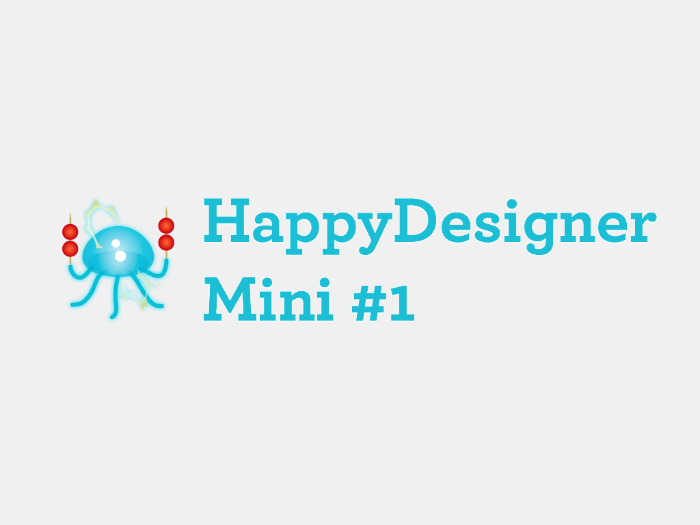
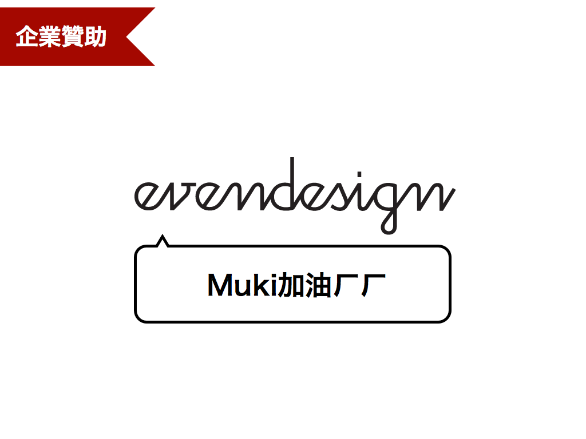
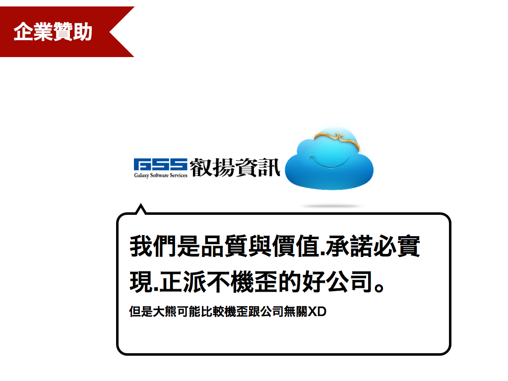
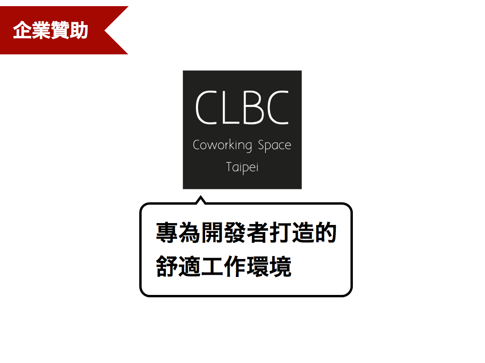
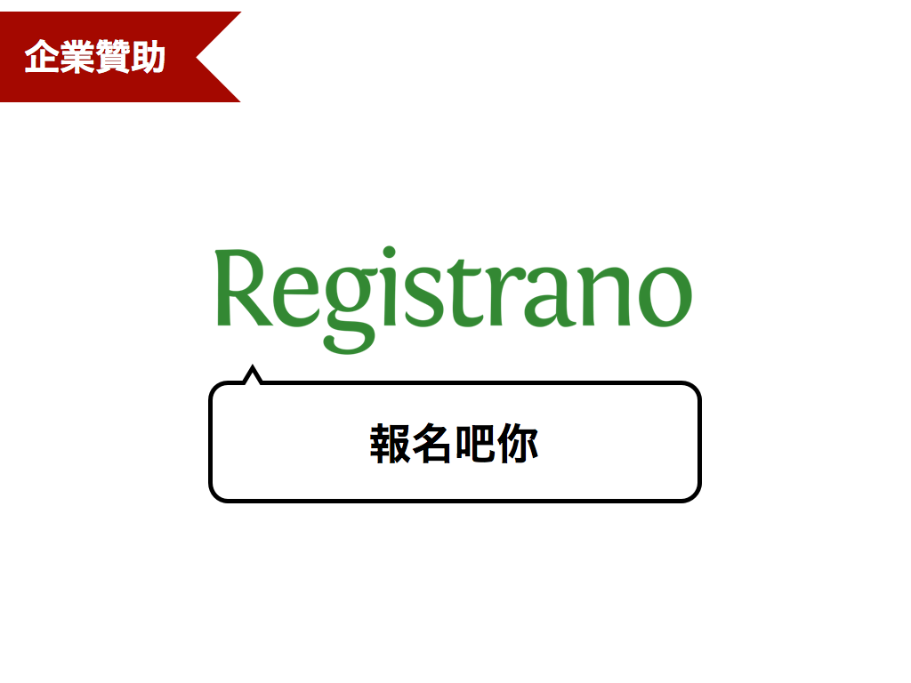

hlb, HappyDesigner





hlb
我是@minipai，我有兒子我超強。 目前在biideal擔任沒library不行的 jQuery developer / Bootstrap designer。
還在寫HTML/CSS時煩惱id/class怎麼取嗎？站起來反抗吧！
hello, this is muki.
專注於互動設計與 App 開發，是台灣使用者經驗設計協會 (UiGathering)創會成員與理事。
大家好，我是Sean Liu，生平沒什麼大建樹，硬要說對世界有些微貢獻的話，平日我在FB上有經營一個小技術社群”HTML5與CSS3在台灣”，也因為這小社群結識了不少社群的朋友，並與他們於2012年舉辦了JSDC，台灣第一場JS的技術年會，今天非常高興有機會受Lbh的邀請來這與各位分享一些前端開發上的經驗
CSS3 Flexbox Model實戰？
不想分享只好繳錢了阿
655的某個酷必BU的設計師
我是 Awoo / josephj / 啊嗚
CodePaint 可以將 JavaScript 的格式一致化、Plato 可以分析代碼品質
Hi，我是dinos，是個後端工程師，專長使用php with mysql，偶爾兼差寫點css/javascript
我們工作在前端上都還只是一些很入門的應用，不外乎就是一些sass/jquery常用的函式庫。現在開始使用bootstrap，因此有做個簡單的小工具應用在合併多個less和sass成一個css
把工作當遊戲的Programmer
collie canvas animation 玩耍…
clkao
i am xdite
How we use Bootstrap
Web 相關開發者，關注於JavaScript 網站前後端開發技術，以及使用者經驗。喜愛與開發者交流，分享開發經驗，秉持著熱血與實踐的精神繼續努力。
brunch skeleton for my tiny project
我是 Neko ，不過大家都叫我科科。 目前任職於 PayEasy 團購事業處 ( 17Life ) 的設計部小主管。 興趣是設計、音樂跟科科(咦)。
分享 SMACSS 應用在團隊編寫 CSS 上的情形與經驗。
我是阿當
呃，就一些無腦的CSS玩法。
Hi!
和大家分享自己所見到的 CSS / Frontend Engineering 未來大趨勢。可能比較算主題一吧？
ddsakura
Taco from Fourdesire : )
用 HTML5 Canvas 上的 3D Effect 來做一些有趣的網頁背景特效吧～
多媒體設計出身，但討厭3D，所以一直都在做網頁相關工作..最近工作是app開發公司的UI設計師，但是設計的工作的量很少….只好偏安躲在自己HTML+CSS世界裡
HTC F2E, Phd Candidate of Construction Engineering
用 CSS 3D Transform 建立 360 度全景（Google Street View）
上個月才經歷 html5 初體驗的網頁設計菜鳥 =3=
選前苦苦哀求，選後當作沒有，僵硬的投票制度所產生的民主弊端促使「動民主」的誕生。動民主是海盜黨內部使用的資訊系統，我們可以利用它把投票權委託給代議士，但也隨時可以取回。動民主系統有各種優良民主制度的功能，但介面卻讓人難以理解：http://lqfb-test.g0v.tw/pf 因此，引進動民主時除了文字翻譯之外，介面也需要重新設計。菜鳥我即將跟大家分享搞不定這套系統的心路歷程… 工作進度目前放在 https://picasaweb.google.com/110174937980629662857/G0v 相簿持續更新中（越後面的越新）